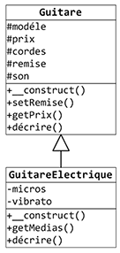
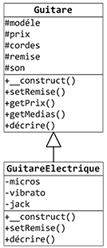
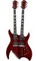
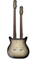
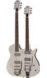
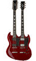
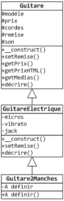
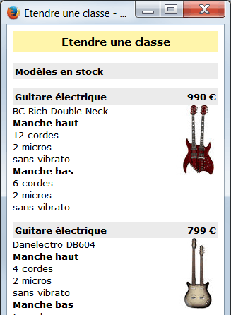

Il est possible de modifier le comportement de la classe mère en redéfinissant,
c'est-à-dire en réécrivant,
dans la classe fille, des méthodes de la classe mère.
A l'extérieur des classes mère et fille, la méthode de la classe mére est alors masquée par sa nouvelle définition dans la classe fille,
pour les objets de la classe fille.
Il est possible, dans la classe fille, d'invoquer la méthode originale de la classe mère, en
préfixant cet appel avec le mot-clé parent et de l'opérateur de résolution de portée ::.
La surcharge de méthodes consiste à définir dans une même classe deux méthodes avec le même nom
et des paramètres en nombre différent, et/ou de types différents. Dans ce cas, la méthode réellement appelée
est choisie en fonction des paramètres effectivement transmis. Le langage PHP ne supporte pas la surcharge de méthodes.
Redéfinition de méthode

Comme vous avez pu le remarquer dans notre exemple, la méthode decrire() est
incompléte pour les guitares électriques car elle ne donne pas d'information sur le nombre de
micros et la présence ou non d'un vibrato. Cette méthode va donc être redéfinie dans la classe
fille GuitareElectrique pour afficher ces éléments.
On pourrait aussi réécrire la méthode decrire() en faisant d'abord appel à celle de la classe
parent, puis en ajoutant l'affichage des informations propres aux guitares électriques.
Dans les 2 exemples précédents, la méthode redéfinie, ici la méthode decrire(), a la même signature (pas de paramètre, et type de
valeur de retour void) dans les classes mère et fille.
Dans l'exemple suivant, nous allons redéfinir la méthode setRemise() qui permet de
définir un taux de remise pour le prix d'une guitare. Par ailleurs, il a été décidé que pour les guitares
électriques, on pouvait avoir non seulement une remise, mais également une paire de cables (des
jacks) offerte. On va réécrire la méthode setRemise() dans la classe fille pour
qu'elle accepte et traite maintenant 2 paramètres : un taux de remise et la valeur en euros
d'une paire de jacks. On modifiera aussi la méthode decrire() pour afficher cette
offre éventuelle.
Dans l'exemple ci-dessus, remarquez que si vous supprimez la valeur par défaut du paramètre $val de la méthode
setRemise(), PHP détecte une erreur fatale :
Declaration of GuitareElectrique::setRemise(int $taux, float $val): void
must be compatible with Guitare::setRemise(int $taux): void
Le même type d'erreur est obtenu si la méthode de la classe mère et la méthode redéfinie dans la classe fille n'ont pas
le même type de valeur de retour.
Reprise de l'exemple

L'affichage des médias étant un plus, il a été décidé qu'il devait être généralisé à toutes les
guitares. On va donc le déplacer de la classe fille dans la classe mère. On y est obligé car
une classe mère ne dispose pas des membres spécifiques d'une classe fille.
La méthode decrire() est légérement modifiée pour afficher également les médias associés
à l'objet.
Il faudrait que le code des classes soit mis dans des fichiers
séparés de ceux contenant le code qui les utilise car les modifications en seraient d'autant plus
simplifiées. Pour rappel, si ce n'est pas fait dans les exemples, c'est uniquement par souci de
simplification.
Exercice : Etendre une classe
Nous avons décidé d'étendre la vente de guitares aux guitares électriques double manches.
Nous trouverons dans notre catalogue les modèles suivants :
Modéle
Prix
Manche haut
Manche bas
BC Rich Double Neck
990 €
12 cordes 2 micros Sans vibrato
6 cordes 2 micros Sans vibrato

Danelectro DB604
799 €
4 cordes 2 micros Sans vibrato
6 cordes 2 micros Sans vibrato

Gretsch G5566 Jet
1329 €
6 cordes 2 micros Avec vibrato
6 cordes 2 micros Avec vibrato

Harley Benton 612
498 €
12 cordes 2 micros Sans vibrato
6 cordes 2 micros Sans vibrato

Ecrivez la définition de la classe Guitare2Manches qui dérive de la classe GuitareElectrique, pour gérer les guitares
double manches. Le constructeur de la classe reçoit un tableau contenant les valeurs servant à
initialiser les attributs. Pour simplifier, on considére que les valeurs sont correctes et on ne
fait pas de validation dans le constructeur. La méthode decrire() doit afficher les
informations sur les 2 manches.


Créez une classe Stock responsable de l'instanciation de ces guitares. Les instances des
guitares seront mémorisées dans un tableau. Le constructeur de la classe Stock ira chercher les
informations sur les guitares dans le fichier texte dont le nom lui sera passé en paramètre.
Le fichier stock/guitares2manches.txt contient les caractéristiques des guitares double manches :